Group Permission With Role Based on Jenkins
前言
筆者之前寫過一篇類似的
文章 ，只是使用的是Project-Based。但筆者發現，這樣的做法反而增加了管理上的難度，因為使用者/群組是在作業系統上的，如果需要增加使用者，便會需要進入作業系統設定，這造成了時間成本，而且筆者使用的是容器化的 Jenkins，這又增加了管理上的難度。
最近剛好發現 Jenkins 上其實還有另外還有一種相對簡單的群組管理方式，而且不需要摸到系統層級，只要在 Jenkins 設定即可。
Role-based Authorization Strategy - 這就是今天的主角。
接下來就從安裝開始吧!
安裝插件及設定策略
我們只需要安裝Role-based Authorization Strategy這個插件
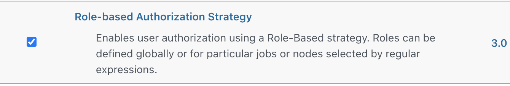
接下來，進入Configure Global Security並且設定Authentication及Authorization的策略。
Authentication的部份，我們選擇Jenkins's own user database，也就是一開始 Jenkins 的預設選項。
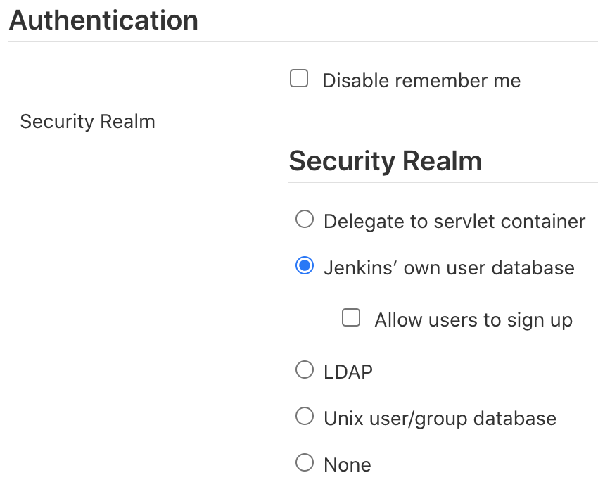
Authorization的部份，我們選擇Role-Based Strategy。
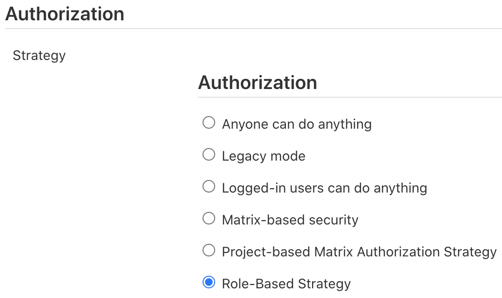
儲存後便啟用了Role-Based Strategy了
設定角色權限
進結束上一個步驟後，使用者可以在Manage Jenkins的頁面最下面方看到Manage and Assign Roles的設定選項被啟用了。
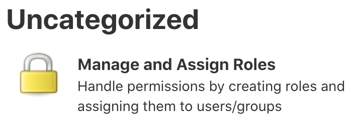
進入設定清單，這裡面有兩個主要的選項，Manage Roles及Assign Roles。
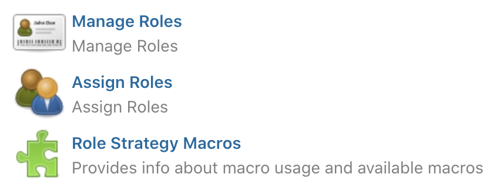
我們必需先建立我們需要的角色及權限後才能做賦予的動作。連擊進入Manage Roles。
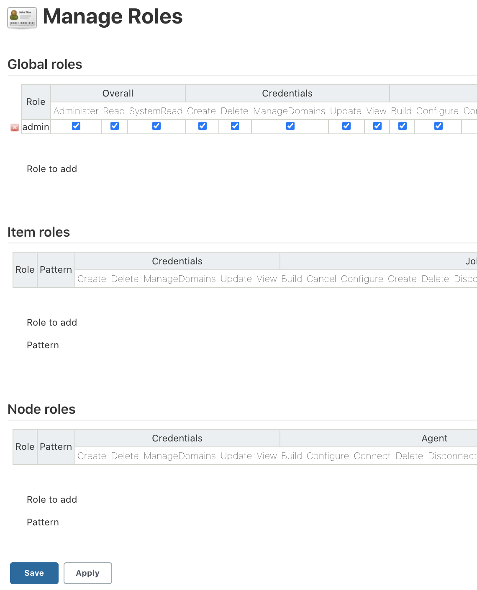
在Manage Roles的設定頁面中，我們可以看到有三個選項，分別是Global Roles、Item Roles及Node Roles。
Global Roles。在此建立的角色是跨專案的。所以，這裡的角色權限不應該開太高。
這裡我們先建一個Overall Read的權限，目的是為了讓使用者或群組至少可以有存取 Jenkins 的權限。
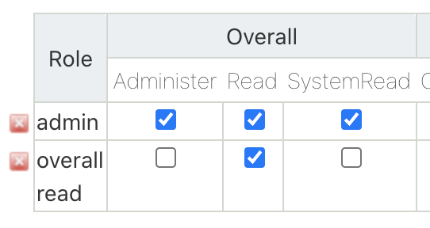
不然就會出現拒絕存取的錯誤
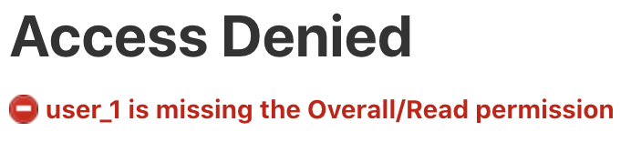
接下來就是針對不同的專案建立不同的角色及存取權限。(筆者已經事先建立了Test-A-Job及Test-B-Job兩個專案)
在Item roles裡面，我們可以開始增加新的角色了。這裡使用者只需要輸入Role to add及Pattern。
Role to add只是對這個角色的描述，這裡我們就叫它Project A吧。Pattern的部份才是重點，我們可利用
Regular Expression 來對我們想要設定的專案進行權限控管。
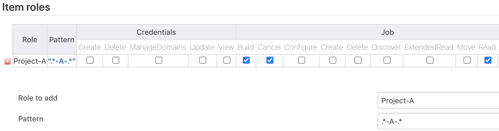
上面筆者使用的 Pattern 是.*-A-.*，這代表專案名稱中有包含-A-的樣式都會使用此權限控管。
點擊Pattern下面的聯結，可以馬上知道哪些專案會被包含進來。
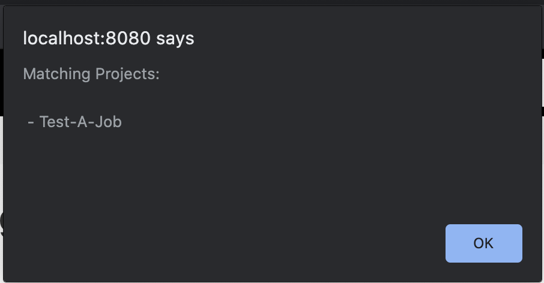
設定完之後，別忘了儲存喔。設定角色後，接下來就是做賦予的動作。
賦予角色權限
進入Assign Roles後，可以看到剛剛Manage Roles設定頁中我們分別對Global roles及Item roles建立的角色。
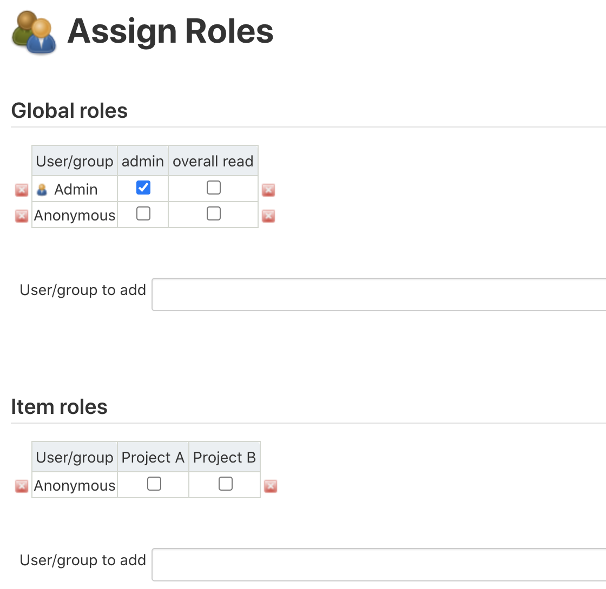
這裡我們可以自行加入使用者或群組，但還記得嗎?一開始我們已經將Authentication設定成Jenkins's own user database了。這代表，我們目前的Authentication是沒有群組概念的。當然，如果你是使用Unix user/group data的話也是可以直接加入群組的。但筆者認為，Jenkins 這套系統本來就不該被太多非系統管理者觸碰到，就算有也必需是專案的管理者。所以，Jenkins 裡面設定的使用者應該要越少越好，避免資安上的問題。因為上面論述，筆者認為直接使用Jenkins's own user database的設定，再搭配Role-Based Authorization Strategy來做細部的權限規劃，會是更好的做法。此外，筆者覺得還有另一個好處，但這對有在用 Docker 的使用者會更有感覺，而這好處就是通常在啟用容器的時候，我們會將jenkins_home外掛一個Volume，這樣就可以把所有的設定儲存在 Host 上，以後要搬到任何地方，只需要把Volume做個備份即可。
接下來就是測試每個使用者權限了。我們先看一下權限的配置先。
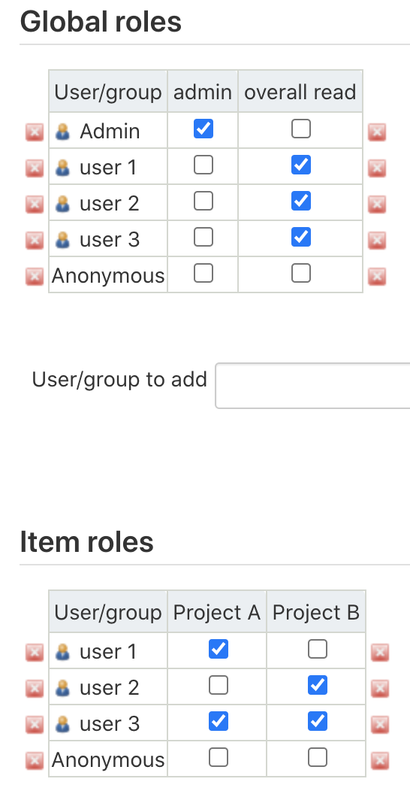
這裡筆者有兩個專案及三個使者並且各別賦予不同的權限。
Global roles裡面，所有角色都Overall Read的權限。user_1僅能存取Test-A-Jobuser_2僅能存取Test-B-Jobuser_3則能存取Test-A-Job及Test-B-Job
我們來看一下user_1吧
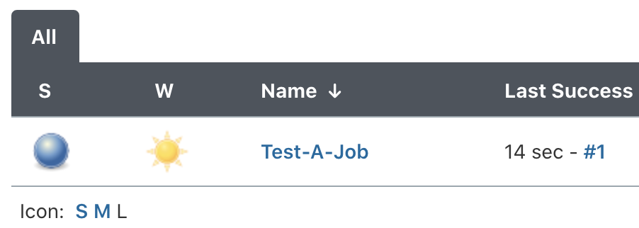
可以登入，而且僅能看到Test-A-Job，並且可以正常執行專案的建置
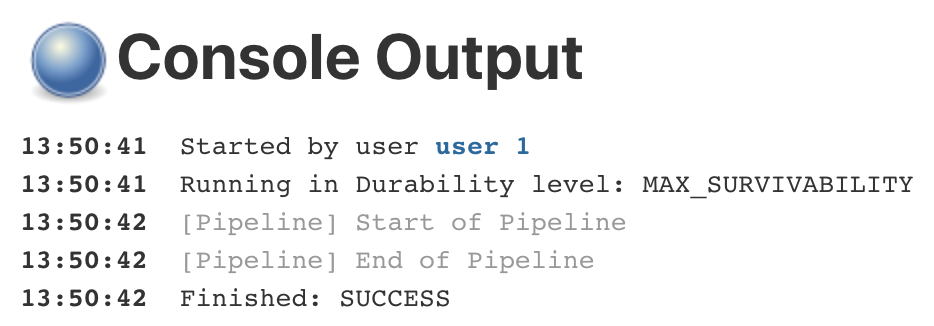
同樣的，登入user_2
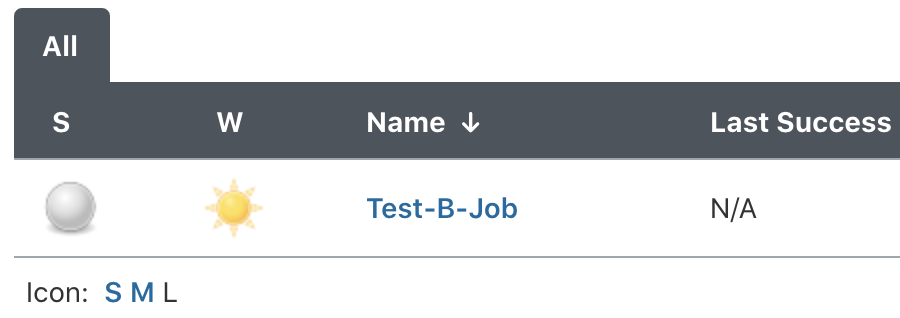
可以登，而且僅能看到Test-B-Job，並且也可以正常執行專案建置
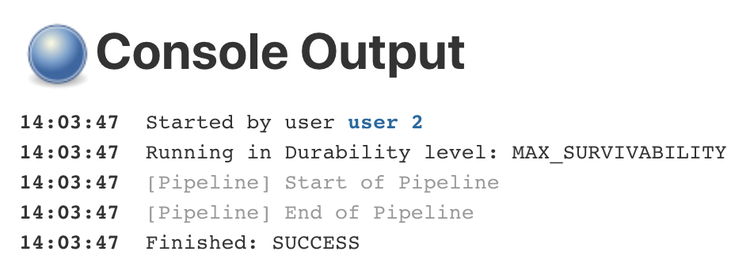
最後登入user_3
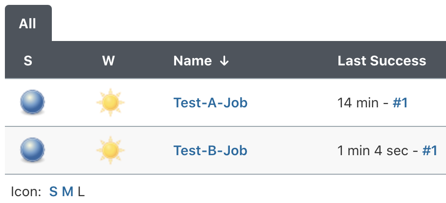
也可正常登入，而且能看到Test-A-Job及Test-B-Job及正常運行兩個專案的建置
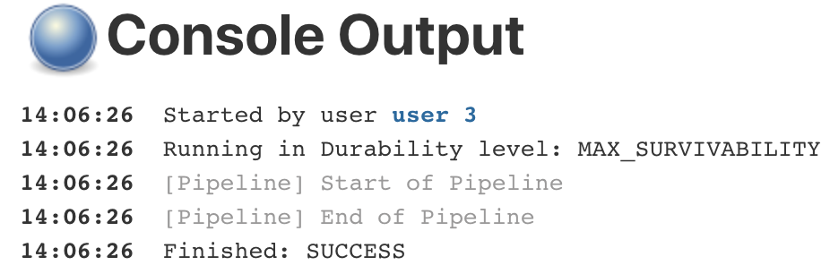
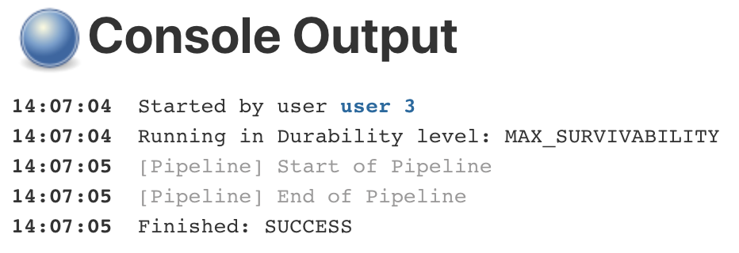
總結
基於Role-Based的權限控管方式，筆者覺得這對系統層比較陌生的 Jenkins 管理者來說友善多了。
至少，不用花時間在學習及測試系統的使用者或群組，或是為了能夠吃到新的設定值而無止境的重啟 Jenkins 的服務。
可攜性又高，很適合我們這些懶人工程師使用。
參考資料
https://medium.com/@vishwanathdeedat/jenkins-role-based-access-358936f07af https://www.thegeekstuff.com/2017/03/jenkins-users-groups-roles/